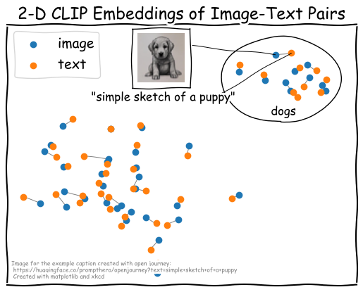
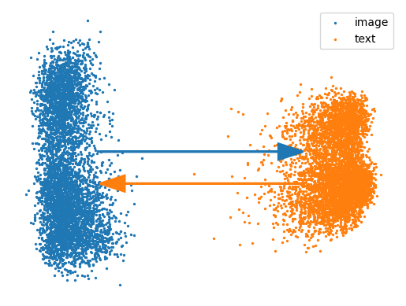

Contrastive Language Image Pre-training (CLIP)
We would expect that such a shared latent space places similar concepts of images and texts close to each other, as demonstrated in the following sketch. However, the reality is a bit more complicated.

Despite the clear objective that is supposed to bring texts and images to a shared embedding space there is a phenomenon called "Modality Gap"
The use of dimensionality reduction methods to compute a 2-dimensional view of the data clearly shows the separation between the two modalities. However, dimensionality reduction comes hand in hand with a loss of information and possible distortion of data. We propose a different way to visualize the dimensionality gap. Similarity heatmaps are a simple yet effective way of visualizing latent space embeddings that also helped us to better understand the modality gap. Using this visualization also allowed us to gain interesting insights unrelated to the modality gap, which we could not have found with the scatter plot visualization alone.
The similarity heatmap below shows the same subset of 100 image-text pairs previously shown in a scatter plot. However, we show the cosine similarities calculated between all image and text embeddings in this case. This results in a matrix with four quadrants: (i) top-left: in-modal similarities of the 100 image embeddings; (ii) bottom-right: in-modal similarities of the 100 text embeddings; (iii) top-right: cross-modal similarities between the 100 image embeddings and the 100 text embeddings; and (iv) bottom-left: a transposed version of the cross-modal image-text similarities. The diagonal axis of each quadrant represents the matching data points (i.e., for the in-modal similarities, the diagonal shows the similarities of the image or text embedding to itself, while for the cross-modal similarities, the diagonal shows the matching image-text pairs). The modality gap is immediately visible: the in-modal similarities are much higher overall compared to the cross-modal similarities.
Now, where does this modality gap even come from?
As analyzed by Liang et al.
where xi and yi are the normalized image and text embedding vectors.
They also experimented with manually reducing the modality gap by moving the embeddings closer together along the gap vector.

However, since the modality subspaces trained by CLIP are not symmetric
Now, what do the similarity heatmap and scatter plot look like when we manually close the gap? As shown in the visualization below, the similarity matrix seems more homogeneous (i.e., in-modal similarities and cross-modal similarities are on a similar level), and points in the scatter plot are closer together. However, the scatter plot also shows that the edges between image-text pairs are still long. The many edge crossings between the image-text pairs are also a qualitative indicator that the embeddings are not well aligned. Furthermore, the text embeddings concentrate more on the center compared to the image embeddings.
As mentioned previously, the two modalities live on different embedding spaces, and the two embeddings vary in structure (i.e., they are not symmetric to each other). Recently published papers propose different versions of CLIP, where the objective function has been adjusted to regularize the trained embedding space. We look closer into two promising approaches, namely CyCLIP
According to Goel et al.
The visualizations below already hint that the embeddings are symmetric: The in-modal similarity heatmaps of the image and text quadrants look similar, and the modalities in the image-text points in the PCA projection seem almost parallel. However, it is also clear that the modality gap is still present.
We can confirm this with a slight modification of the similarity heatmap. For this, we calculate the difference between the in-modal similarities of images and texts, which results in a matrix where values approach zero (i.e., the matrix is a blue rectangle).
When looking back to Liang et al.’s
Again, when closing the modality gap, the similarity heatmap becomes more homogenous (i.e., the in-modal similarities and cross-modal similarities are similarly strong). Also, the image-text pairs in the scatter plot are closer together, but there are still quite some edge crossings.
Alternatively, we can use UMAP or tSNE projection to better utilize the neighborhoods of similar embeddings instead of linearly determining the axes with the highest variance, as done in PCA. In the case of CyCLIP (scatter plot on the right hand), the use of a neighborhood-based dimensionality reduction technique results in shorter edges and better clustering of similar embeddings. For CLIP (scatter plot on the left hand), edges remain long, and similar images and texts are not clustered together. See the Appendix for examples with 5000 samples.
Let us summarize how the loss changes for CLIP and CyCLIP when moving the embeddings together along the modality gap vector. For that, we again use the entire MSCOCO validation dataset of 5000 samples.
| Model | Original Distance | Original Loss | Closed Distance | Closed Loss | Loss Difference |
|---|---|---|---|---|---|
| CLIP | 0.818611 | 0.355370 | 0.035077 | 1.124780 | 0.769410 |
| CyCLIP | 0.873026 | 0.763433 | 0.001218 | 0.848867 | 0.085434 |
The numbers confirm that CyCLIP's loss changes far less than CLIP's loss when manually closing the gap – it neither gets better nor significantly worse. However, the question arises:
From a performance optimization point of view, this is a valid question. What's the point of interfering in a well-performing system? On the other hand, the alignment of embedding spaces can become important for other downstream tasks. For example, using image and text embeddings interchangeably, as done in language-guided image generation, relies on the fact that image and text embeddings are aligned with each other and live in the same space. Another aspect is that an aligned embedding space is closer to how humans expect multi-modal models to see the data. Furthermore, closing the modality gap allows us to actually visualize texts and images in the same space, and develop interactive exploration tools that help to understand multi-modal data (e.g., analyzing pairs of human written captions and machine-generated images to find insights about text-to-image generation models like StableDiffusion
These example use cases of why closing the modality gap might be helpful should give you an incentive about why the pure "performance optimization" point of view is not the only one. In fact, if we can close the modality gap without significantly losing performance, we have a win-win situation!
In the previous section, we established a way to manually close the modality gap of CyCLIP embeddings. However, wouldn’t it be better to already close the gap during training and not rely on post-hoc manipulations? While we did not experiment with further modifying (Cy)CLIP’s objective to close the gap during training, we did stumble upon a different learning approach that naturally closes the gap.
Contrastive Leave One Out Boost (short: CLOOB)
However, we also observe something else: These modifications of the training objective seem to aid the closure of the modality gap!
We believe that CLOOB’s ability to close the gap during training mainly stems from the modern hopfield layers that are applied before calculating the InfoLOOB loss. In this step, the batch of image embeddings and text embeddings is used as an associative memory to create a weighted average of embeddings for the current instance. Since this is done for each combination of embedding and associative memory (i.e., each image and each text embedding is associated with the entire batch of image embeddings AND the entire batch of text embeddings). This creates a stronger correlation between the image/text instances to their own modality and the opposite modality.
The following visualizations give an overview of the similarity heatmap for CLIP and CyCLIP before (left) and after (right) manually removing the modality gap, as well as the similarity heatmap for CLOOB with the official checkpoints from the paper and a CLOOB version that was trained on the LAION 400M dataset and used a ViT instead of a CNN to encode images
The previous sections taught us about the modality gap, where it comes from, and ways to close it. We also gave reasons for why closing the gap might be beneficial and now demonstrate how closing the modality gap can help for the use case of visual analytics. We also introduced a handy new way of visualizing latent space embeddings and utilize this again in the following analyses. Finally, we also want to mention that there is a way to visually close the modality gap (i.e., without actually closing the gap in the embedding space), as described in the Appendix.
Using the previously introduced techniques, we implemented an interactive prototype called “CLIP explorer”. Users can switch between models, explore the similarity heatmap and scatter plot visualizations, manually close the modality gap, and try various projection methods.
We can look into semantic subsets of data by filtering instances based on their captions. The following example shows the visualizations for the subset that contains the substring "dog". We notice that some lines in the similarity matrix have a darker color. When hovering over those darker lines, we can see that most of these instances correspond to images and texts about "hot dogs" or other images that do not show a dog or where a dog is in an uncommon setting. To make this even more obvious, we can use the "Cluster matrix by similarity" function that reorders the similarity heatmap such that similar lines are grouped together. One cluster that stands out in all three CLIP-like models is the "hot dog" cluster. However, we can also see clusters for "dog and frisbee", "dog and bed", or "dog and car".
We would like to see what the models’ latent-space embeddings look like for a dataset that is not (entirely) procured by humans. To this end, we use DiffusionDB
With the default settings, we randomly explore the dataset and get a feeling for the data contained in this subset. We can investigate instances that are outliers in the similarity heatmap by hovering rows or cells that have particularly large or low similarity values. For example, there are some particularly bright cells scattered in the image in-modal similarity heatmap. Upon hovering, we see that all of these images are blurry. We know that DiffusionDB added blur filters for images that were detected to show inappropriate content. Interestingly, CLIP seems to create similar latent embeddings for blurry items, causing them to show high similarity in the similarity heatmap.
For further analyses, we choose "Cluster matrix by similarity" to order the matrix in a way that groups similar rows in the heatmap and investigate the clusters that are emerging. We can see a cluster for "impressionism and crystal" that seems to have homomorphic similarities over all images (i.e., there is a distinct purple line along all images of this cluster). Upon further investigation, we see that the captions in this cluster are mostly vague texts or single words (e.g., "crystal", "impressionism") that can apply to a lot of images. The same cluster becomes apparent in the text in-modal similarity heatmap, where all captions within the cluster seem to have high similarity.
Let’s close the modality gap to investigate clusters in a 2-dimensional scatter plot. We can either do this by switching to the CLOOB model or using CyCLIP in combination with the "Close modality gap" option. We see that the embeddings are aligned and can use the interactive scatter plot to investigate clusters. For example, we can try to find the cluster of blurry images, or we can try to find the cluster with instances of "impressionism". Of course, this would be much more fun on a larger scale :)
As previously demonstrated, we can identify patterns in datasets and subsets of datasets using the similarity heatmap visualizations. Now, we would also like to see if we can use the same techniques to find patterns in augmentations of a single data point. For example, we take a single image, generate rotated versions of this image, and use this augmented dataset to compute CLIP embeddings and similarities. The results of this experiment for the three CLIP-like models are shown in the visualization below (note that we again show two variants of the CLOOB model). To generate this dataset, we gradually rotate a selected image by 360 degrees over the course of 100 steps. Each step results in a “new” image and new data point. Note that we only augment the image, but not the text, which results in a completely homogeneous similarity in the in-modal text quadrant of the heatmap and in homogenous stripes along the text dimension in the cross-modal quadrants of the heatmap.
When looking at the in-modal image similarity quadrant of the heatmap for each model using augmentations of the first image, we can see an interesting pattern emerge. In addition to the bright yellow diagonal axis that corresponds to the similarities of images to themselves, there is also the perpendicular off-diagonal axis of the matrix sticking out. When hovering along the off-diagonal, we see that the two images along this axis are actually mirrored versions of each other. It seems like all models are invariant to the horizontal flip transformation for this image. We can also see a checkerboard-like pattern emerge for some images emerging in all models except for the CLOOB_LAION400M. When looking into the darker areas of this heatmap in more detail, we can see that the pattern occurs around multiples of 90-degree rotations. The fact that this pattern occurs mainly for the three models that use a CNN-based image encoder
When looking at the overall distribution of similarity values, we also notice that the ViT-based CLOOB model seems to have more patches of low-similarity values compared to its CNN-based counterparts. This might indicate that ViT’s overall robustness to rotation transformations is lower. In further investigations, we might want to directly compare two versions of CLIP: the current version with the CNN-based image encoder and a version with a ViT-based image encoder, and study the phenomenon on a larger dataset.
Use the interactions to explore the heatmaps for different images yourself.
In a second experiment, we analyze the heatmaps for an image to which we add an increasingly higher noise level. When looking at the heatmaps for the first image, it seems like there is a certain level of noise for each model, after which the model cannot seem to recognize the content of the image anymore. All images with a higher level of noise than this threshold seem to look (almost) the same (as indicated by a bright yellow rectangle at the lower-right corner of the in-modal image similarity quadrant).
conclusion...
TODO
In the previous sections, we learned two ways that can help us close the modality gap:
Let's also recall the reasons why we would like to close the gap:
From a visualization point of view, we might not care about the first two reasons, as long as we can visually close the modality gap. By visually closing the gap, we do not change the embeddings or the model, but map them into a shared low-dimensional space. This can be accomplished in several ways: (i) out-of-sample projection, (ii) concatenating image-text embeddings and treat them as one combined embedding. The first method results in a low-dimensional datapoint for each image and each text embedding; the latter two result in a combined low-dimensional for the image-text pairs. The method you would want to choose depends on the goal of the visualization.
We can first project embeddings of either images or texts using UMAP. This builds a neighborhood graph using in-modal similarities and results in a low-dimensional projection for one modality. We can utilize UMAP's out-of-sample projection to also project the embeddings of the second modality onto the space of the first modality. Since the out-of-sample projection again tries to map each point to the most similar points in the existing low-dimensional space, you can imagine this as using the cross-modal similarities between images and texts. Since this is what CLIP was trained on (i.e., optimizing distances between texts and images), the mapping should visually remove the modality gap.
As an example, we take the 5000 sample MSCOCO validation set and first fit and transform the image embeddings. We then transform the text embeddings with the existing UMAP embedding and show the results in a scatter plot. The overall structure seems to align images and texts; while there are a lot of cross-cluster connections that show that image-text pairs are not always close to each other, most of the connections seem to be within clusters. Cross-cluster connections can be indicators of various things. For example, the pairs may not be deemed similar by CLIP, which results in embeddings that are far away from each other in the high-dimensional latent space, which would be reflected in the low-dimensional projection of the embeddings. Another issue might come from the projection method itself. As mentioned previously, projecting data to a low-dimensional space comes with a loss of information that might introduce artifacts. The fact that we use out-of-sample projection might amplify this effect even further.
Visual analytics tools can be helpful to gain further insights into the data and why certain pairs seem to be far away from each other. Basic interactions like hover information or selection summaries could already be a good start for further investigation. The rich nature of image and text data also allows for more advanced analytic visualizations; for example, texts can be used to extract labels for clusters that carry rich semantic meaning, or example images could be used to summarize clusters. Visually encoding the high-dimensional similarity of embedding pairs (e.g., as saturation of the lines between pairs) could be a helpful indicator that could show whether point pairs are far apart from each other due to artifacts from the projection or due to CLIP not recognizing them to be similar.
For a different kind of visual representation of image-text embedding spaces, we can simply concatenate the embedding vectors and transform them into a combined low-dimensional space. The low-dimensional space can be visualized in a scatter plot and visual analytics approaches can be used to explore the data. Note that with this approach, we only have one low-dimensional data point per image-text pair.